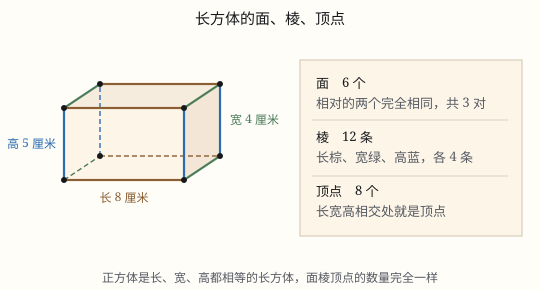

长方体和正方体的认识
长方体有 6 个面、12 条棱、8 个顶点，相对的面完全相同；12 条棱正好分成 3 组，每组 4 条。正方体是它的特殊情况。
| 所属主题 | 立体图形 |
|---|---|
| 所属模块 | 图形与几何 |
| 课标学段 | 第三学段（5~6年级） |
| 前置知识 | 平行四边形和梯形的认识、长方形和正方形的面积 |
| 核心素养 | 空间观念几何直观推理意识 |
课标要求
| 图形与几何·图形的认识与测量 | 认识长方体、正方体和圆柱，了解这些图形的展开图，探索并掌握这些图形的体积和表面积的计算公式，认识圆锥并探索其体积的计算公式，能用这些公式解决简单的实际问题。 印刷第 33 页 行为动词：掌握 |
|---|
说明
纸箱、砖头、冰箱、课本，形状都是长方体。看一个立体图形，先数清三样东西：面（平平的一整块）、棱（两个面相交的那条边）、顶点（三条棱碰在一起的尖角）。长方体这三样分别是 6、12、8。
6 个面：上、下、前、后、左、右。相对的两个面完全相同——上面和下面一样，前面和后面一样，左面和右面一样。所以 6 个面看上去很多，其实只有 3 种尺寸。
12 条棱。为什么不是 24 条？每个面有 4 条边，6 个面一共 24 条边；但每条棱同时属于两个面，被数了两遍，24 ÷ 2 = 12。
这 12 条棱可以分成 3 组，每组 4 条：4 条长、4 条宽、4 条高。分组的依据是方向——朝着同一个方向的棱，长度一定相等。所以棱长总和 =(长+宽+高)× 4。
8 个顶点：每个顶点正好是一条长、一条宽、一条高碰头的地方。8 × 3 = 24 个「棱的端点」，而每条棱有两个端点，24 ÷ 2 = 12，又回到了 12 条棱。三个数互相扣得上，说明没有数错。
正方体是长、宽、高都相等的长方体：12 条棱一样长，6 个面都是完全相同的正方形。所以正方体一定是长方体，长方体却不一定是正方体。
使用场景
物流包装：纸箱的长宽高决定它能装多少、要多少胶带，先要认准它的面、棱和顶点。
工程建造：焊一个长方体框架要备多少角铁，算的就是 12 条棱的总长。
购物与礼品：月饼盒、礼盒在棱上贴金边、装提手，都要按棱长来备料。
校园手工：用吸管和橡皮泥搭长方体、正方体框架，是最快认出面棱顶点的办法。
家庭收纳：柜子、收纳箱能不能塞进墙角，看的是长宽高这三个方向。
注意点
三个数别记混：6 个面、12 条棱、8 个顶点。写成「8 条棱」是最常见的口误。
棱是 12 条不是 24 条。6 个面各有 4 条边，但那条边两个人共用。
棱长总和用 (长+宽+高)× 4，不是乘 3，更不是三个数相乘——三个数相乘是体积。
长方体不一定 6 个面都是长方形。有的长方体有两个相对的面是正方形（比如方柱子），它仍然是长方体。
「相对」指的是正对着、不相邻。左右是相对，左和前是相邻，别弄混。
「正方体是特殊的长方体」只能正着说。反过来说「长方体是特殊的正方体」就错了。
为什么是这样

图 1：6 个面、12 条棱、8 个顶点，12 条棱按方向自然分成 3 组
算理推导
拿一个纸箱，先数面：上、下、前、后、左、右，一共 6 个。把上面和下面比一比——形状相同、大小相同，转 180° 能完全重合。前后面、左右面也一样。所以 6 个面是 3 对，每对两个完全一样。
再数棱。沿着一个面数，它有 4 条边；6 个面就有 24 条边。可拿起盒子一转就看见：相邻两个面共用的那条边，被两个面各数了一次，每条棱都被数了两遍，所以 24 ÷ 2 = 12 条。
把 12 条棱按方向分组。竖着的 4 条一样长，都是高；沿着长的方向 4 条一样长；沿着宽的方向 4 条一样长。正好 3 组、每组 4 条——这就是「长、宽、高各 4 条」的来历。为什么同方向就一定一样长？因为长方体的每个面都是长方形，对边相等，一条一条推过去，整组就都相等了。
数顶点：每个角上都是一条长、一条宽、一条高碰在一起，一共 8 个角。8 × 3 = 24 个端点，每条棱 2 个端点，24 ÷ 2 = 12，还是 12 条棱。
拆纸盒（图 2）：沿棱剪开摊平，6 个面变成一张平面图。原来正对着的两个面，在展开图上总是隔着一个面——左面和右面中间隔着前面，前面和后面中间隔着右面。认展开图时先找「隔一个」的那一对，它们就是相对面。
正方体是把长、宽、高拉平：3 组棱变成一样长，用 a 表示，12 条棱共 12a；6 个面都是边长 a 的正方形。它满足长方体的一切条件，只是更特殊，所以叫特殊的长方体。
动手实验
用 12 段吸管和 8 团橡皮泥搭一个长方体框架：先搭一个长方形做底面（4 段吸管、2 种长度），在 4 个角上各立一根同样长的吸管当高，顶面再用 4 段封口。数一数：吸管 12 段、橡皮泥 8 团，正好对上 12 条棱、8 个顶点。再把 12 段全换成一样长，框架立刻变成正方体——这时 6 个面全是正方形。还可以拿萝卜切：先切出一个平面，再垂直于它切第二刀、第三刀，切出六个面两两垂直的长方体，切完数面、数棱、数顶点。
按场景的例题
例 1（场景：物流运输） 给一个长方体纸箱沿 12 条棱贴防撞胶带
纸箱长 6 分米、宽 4 分米、高 3 分米，沿所有棱贴一圈胶带，至少需要多少分米？
解：长宽高各有 4 条：(6 + 4 + 3) × 4 = 13 × 4 = 52 分米。也可以一条一条加：6×4 + 4×4 + 3×4 = 24 + 16 + 12 = 52。
答：至少需要 52 分米，也就是 5.2 米。
例 2（场景：工程建造） 焊一个长方体铁架
铁架长 8 分米、宽 5 分米、高 4 分米，需要多少分米角铁？如果角铁每分米 3 元，材料费多少元？
解：(8 + 5 + 4) × 4 = 17 × 4 = 68 分米；68 × 3 = 204 元。
答：需要 68 分米角铁，材料费 204 元。
例 3（场景：购物消费） 正方体礼盒沿棱贴金边
礼盒是正方体，棱长 25 厘米，12 条棱都贴上金边，需要多长金边？
解：正方体 12 条棱一样长：25 × 12 = 300 厘米。
答：需要 300 厘米，也就是 3 米。
例 4（场景：校园生活） 用吸管搭长方体框架
相交于一个顶点的三条棱分别长 10 厘米、6 厘米、4 厘米。这个框架的 12 条棱一共多长？最大的那个面面积是多少？
解：相交于一个顶点的三条棱就是一条长、一条宽、一条高，所以 (10 + 6 + 4) × 4 = 80 厘米。最大的面是长乘宽：10 × 6 = 60 平方厘米。
答：12 条棱共 80 厘米，最大的面是 60 平方厘米。
常用推论
长方体棱长总和 =(a+b+h)× 4；正方体棱长总和 =12a。
已知棱长总和 L，则 a+b+h=L÷ 4；再知道其中两个，就能求出第三个。
长方体有 3 组相对的面，每组两个面完全相同；正方体 6 个面全等。
正方体是长、宽、高都相等的长方体，是特殊的长方体。
展开图里相隔一个面的两个面是相对面；相对面在展开图上永远不会挨在一起。
长方体最多有两个面是正方形（这两个面相对），其余 4 个面是相同的长方形。
易错点
错「长方体有 24 条棱，因为 6 个面，每个面 4 条边，6×4=24。」
为什么错每条棱被相邻的两个面共用，在数面的时候被数了两遍。
正确24 ÷ 2 = 12 条棱。
错长 6、宽 4、高 3 的长方体，棱长总和算成 (6+4+3)× 3 = 39 分米。
为什么错长、宽、高各有 4 条，不是 3 条。乘 3 是凭「三种长度」想当然。
正确(6+4+3)× 4 = 52 分米。
错「展开图上紧挨着的两个长方形是相对面。」
为什么错挨着的两个面在立体图里共用一条棱，是相邻面，不可能正对着。
正确相对面在展开图上隔着一个面，比如左面和右面中间隔着前面。
错「这个盒子有两个面是正方形，所以它不是长方体。」
为什么错长方体只要求 6 个面都是长方形（正方形是特殊的长方形）、相对的面相同。有两个面是正方形照样成立。
正确它是长方体，只是比较特殊：两个正方形面相对，另外 4 个面是相同的长方形。
直观理解
把纸箱当成一间小房子：8 个角是顶点，12 条墙棱是棱，6 面墙（连地板和天花板）是面。你在屋里贴着墙走一圈，会经过 4 面墙，它们两两相对；抬头是天花板，低头是地板，又是一对。
六面十二棱，八个顶；相对的面儿一样平；长宽高，各四条，正方十二一个样。